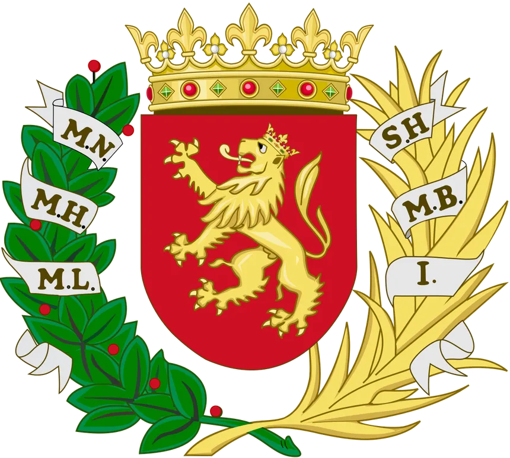

Real Zaragoza
El Real Zaragoza es el equipo de fútbol más emblemático de la ciudad, fundado en 1932. Con una rica historia, el club ha conquistado numerosos títulos, incluyendo 6 Copas del Rey y una Recopa de Europa en 1995. Los partidos del equipo se juegan en el estadio de La Romareda, un lugar de gran tradición futbolística.
Si eres un amante del fútbol, no te puedes perder la oportunidad de asistir a un partido y sentir la pasión de la afición zaragocista.
Casademont Zaragoza
El Casademont Zaragoza, conocido popularmente como el equipo de baloncesto de la ciudad, ha llevado el nombre de Zaragoza a lo más alto del deporte. Fundado en 2002, el equipo compite en la Liga Endesa (ACB), la máxima categoría del baloncesto español.

Los partidos se disputan en el Pabellón Príncipe Felipe, donde la emoción y el espectáculo están garantizados.